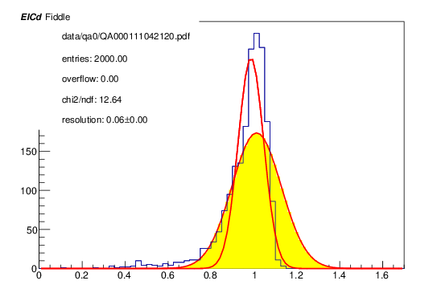
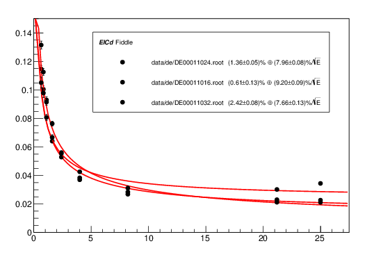

jordan roth, joe osborn, nils feege
jdroth@umich.edu
updated 22 August 2017
This document describes some simulated single-particle energy resolution plots that were generated for the future EIC detector's electromagnetic calorimeters. The resolution was computed for electrons and positrons, and it was computed differentially in particle energy and pseudorapidity. The pseudorapidity did not seem to have a big effect on the resolution, within each calorimeter, so pseudorapidity-integrated energy resolutions were also computed for each calorimeter.
For each combination of energy and pseudorapidity, 2,000 single-particle events were simulated, for both electrons and positrons. Nine energy values and nine pseudorapidity values were used, so a total of 162,000 events were simulated for each particle species.
The PHG4SimpleEventGenerator class was used for particle generation.
The EIC's electron beam is expected be accelerated to at most around 21.2 GeV, so 25 GeV was taken as a safe upper limit for scattered electrons hitting the calorimeters. A low-end energy of around 0.5 GeV was desired. Because the energy resolution goes like 1⊕1/√E, it was decided to sample energies on a 1/x2 scale. On this scale, 0.2 maps to 25 GeV and 1.25 maps to 0.64 GeV. About eight samples was deemed adequate. In summary, electrons and positrons were generated with the following energies.
| energy (GeV) | 25.0 | 21.2 | 8.2 | 4.0 | 2.4 | 1.6 | 1.1 | 0.83 | 0.64 |
|---|
The extra point at 21.2 GeV was added because preliminary analysis found that the uncertainty on the O(1) term in the energy resolution fit was rather large. Because the O(1/√E) term is small at large energies, an extra point at high energy should have helped to reduce the O(1) term's uncertainty.
Technically, particles were generated with these values of momentum in GeV/c, but for electrons at these energies the distinction is negligible. Particles were all generated with exactly these momenta.
The EIC detector's pseudorapidity coverage goes from -4 to 4. This region is covered by three electromagnetic calorimeters. The electron-going calorimeter, EEMC, covers the region from -4 to -1. The central calorimeter, CEMC, covers the region -1 to 1. The hadron-going calorimeter, FEMC, covers the region 1 to 4. It was desired to sample roughly uniformly in pseudorapidity, with multiple samples from each calorimeter. About three samples per calorimeter was deemed sufficient. In summary, electrons and positrons were generated with the following pseudorapidities.
| pseudorapidity | 3.2 | 2.4 | 1.6 | 0.8 | 0.0 | -0.4 | -1.6 | -2.4 | -3.2 |
|---|---|---|---|---|---|---|---|---|---|
| FEMC | CEMC | EEMC | |||||||
The value of -0.4 was used instead of -0.8 because CEMC was expected to behave roughly symmetricly, and I wanted to spice things up a bit.
After particles were assigned one of these nominal pseudorapidity values, their true pseudorapidity was randomly sampled from a uniform distribution of full width 0.4, centered on the nominal pseudorapidity.
The azimuthal heading of each particle was randomly sampled from a uniform distribution that covered from -π to π.
Each particle's production vertex was given x and y coordinates of zero. The z coordinate was randomly sampled from a gaussian centered at zero with a standard deviation of 27 cm.
The functions defined in the G4Setup_EICDetector.C CINT macro file were used to create a GEANT4 simulation of the EIC detector. Generally, default arguments were used. As of my writing, the GEANT4 simulation includes the following detector components.
Noticeably absent from this list are a BBC, roman pots, a ZDC, and FHCAL. None of these absences should have affected the results described in this document, however.
The two-dimensional magnetic field of the detector was taken from the file sPHENIX.2d.root.
The most important detector components for this study are EEMC, CEMC, and FEMC. EEMC is a lead tungstenate crystal calorimeter, CEMC is a tungsten-scintillating sampling calorimeter, and FEMC is a lead-scintillating sampling calorimeter.
Energy resolution is taken to be the width of the peak in the reconstructed particles' energy spectrum, normalized by the particles' truth energy. To reconstruct the electrons and positrons, standard segmentation, towering, and clustering algorithms are run over each simulated event. The *_Cells(), *_Towers(), and *_Clusters() functions from the CINT macro files loaded by G4Init() from G4Setup_EICDetector.C are used, where the * may evaluate to EEMC, CEMC, or FEMC. Clusters with energy less than 0.2 GeV are discarded. Events without any clusters over 0.2 GeV are discarded. The energy of the highest-energy cluster from each event is then taken as the reconstructed electron or positron's energy. This reconstructed energy is divided by the particle's truth energy, and the resulting ratio is histogrammed. This histogram is then fit with a gaussian, as shown below. The standard deviation of this fit is taken as the energy resolution.
Histogram of normalized reconstructed energy of 21.2 GeV electrons with pseudorapidity -0.4±0.2. The black line shows the histogrammed pseudodata, the unfilled smooth curve shows the gaussian fit, and the yellow-filled curve shows the initial guess made for the fit.
The energy spectrum has a much fatter lower tail than a gaussian, so sometimes I had problems where the gaussian's lower tail would fit to the tail of the energy spectrum. The problem was especially prevalent with EEMC, which has really tall thin peaks. Getting all the spectra to fit correctly required a whole lot of fiddling with the fitting algorithm's parameters. I am disclosing this because lots of fiddling can create biased results.
The fact that the energy spectra are not gaussian may indicate that the calorimeters' clustering algorithms need work. I think that Nils mentioned at some point that they are not mature yet. Alternatively, I may be neglecting some cut that would make the energy spectra a lot easier to fit.
The calorimeter energy resolutions are expected to fall on a curve like 1⊕1/√E. To compute the O(1) and O(1/√E) coefficients, the energy resolution was plotted against truth energy for each pseudorapidity value. This curve was then fit with the template function 1⊕1/√E, as shown in the figure below. The best-fit parameters were then extracted.
Plot of energy resolution versus truth energy for electrons with pseudorapidity -3.2±0.2. The points show the energy resolution values computed from pseudodata, and the solid line shows the best-fit curve.

The three energy resolution curves for FEMC are displayed below. They look pretty similar, but the best-fit parameters are definitely correlated with pseudorapidity. Maybe this again shows that I need to be more selective with my energy resolution fitting histograms?
Electron energy resolution curves for all pseudorapidities in the FEMC acceptance.
Because the best-fit curves for each calorimeter were so similar, the energy resolution was re-computed after combining data sets according to the calorimeter that the electrons or positrons should be detected in. For example, the 21.2 GeV data sets for pseudorapidities of -3.2, -2.4, and -1.6 were combined into a single 21.2 GeV EEMC data set. Using these combined data sets, the normalized reconstructed energies were re-histogrammed, the energy resolutions re-computed, and the energy resolution curves re-fit.
Combining data sets like this obviously reduces the statistical uncertainty on the computed energy resolution values, but I have gotten to thinking lately that I may also have introduced a new source of systematic error. I am not 100% sure about that. You should probably ask someone smarter than me what he or she thinks about this.
The energy resolution curves for each detector, for both electrons and positrons, are displayed below.
Note: the electron energy resolution values at 0.64 GeV for pseudorapidities of 0.0 and -3.2 are each computed with only 1,800 out of 2,000 events. The positron energy resolution value at 0.83 GeV and pseudorapidity 2.4 also uses 200 fewer events than normal. This is due to a failure of certain GEANT4 jobs to complete correctly when submitted to HTCondor. I do not expect these failures to noticeably affect the results displayed below.